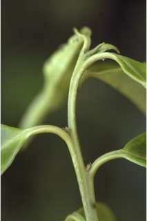
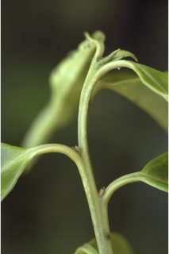

Images :

 



| Habit : | Trees ca. 10 m tall. |
| Leaves : | Leaves simple , alternate , spiral ; petiole 0 5-2 cm long, canaliculate above, glabrous ; lamina 4-17 (-21) x 2-7 (-9) cm, elliptic to elliptic-ovate , apex acuminate , base acute to attenuate , margin crenate-serrate , sometimes revolute , coriaceous , glabrous ; midrib canaliculate above; secondary_nerves 6-9 pairs; tertiary_nerves broadly reticulate . |
| Inflorescence / Flower : | N/A |
| Fruit and Seed : | N/A |